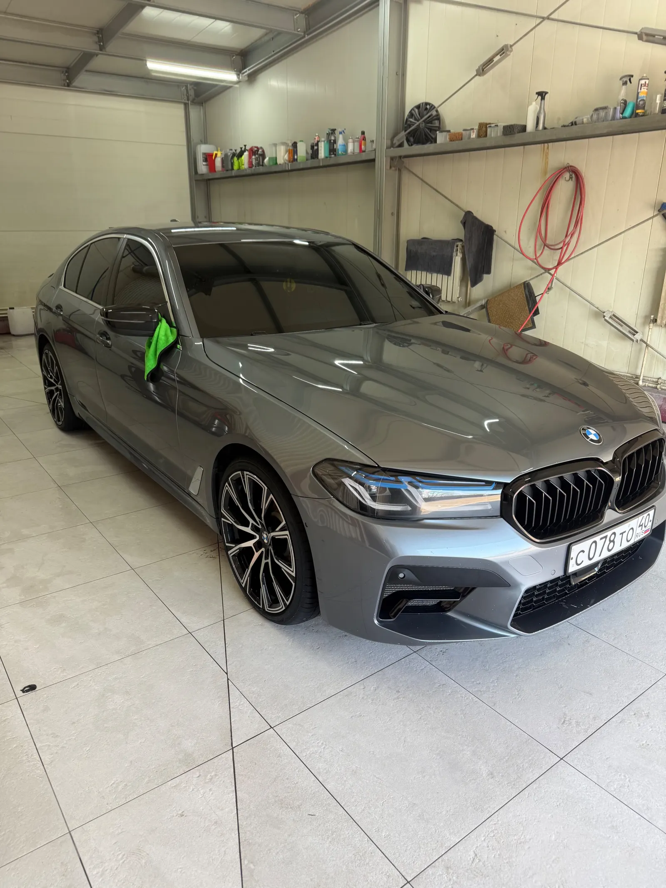
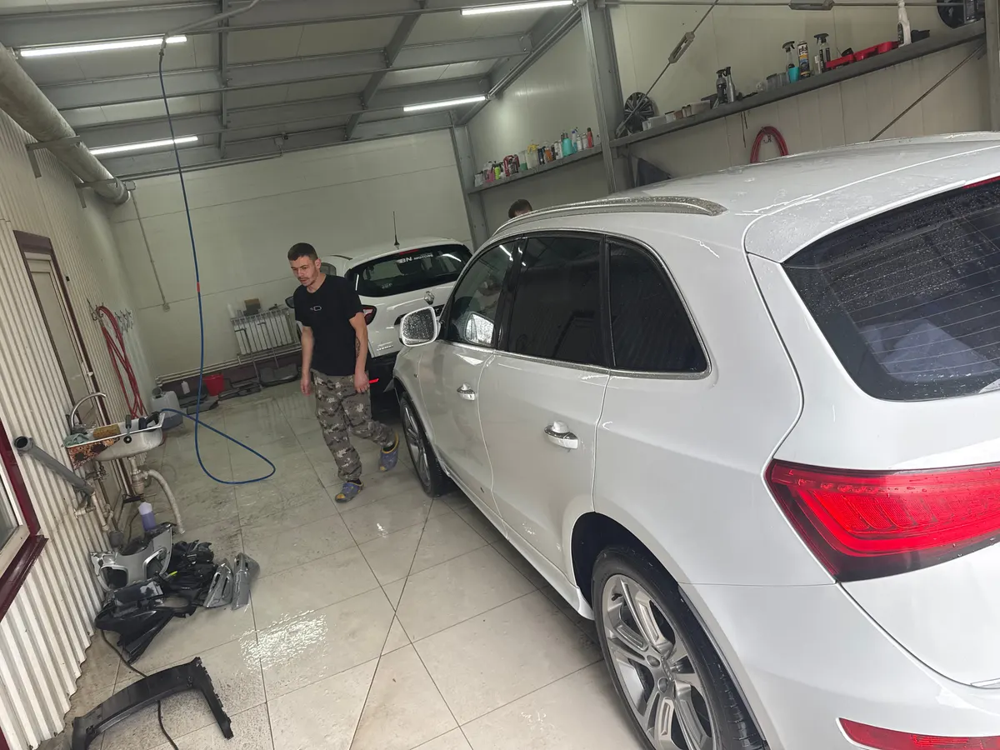
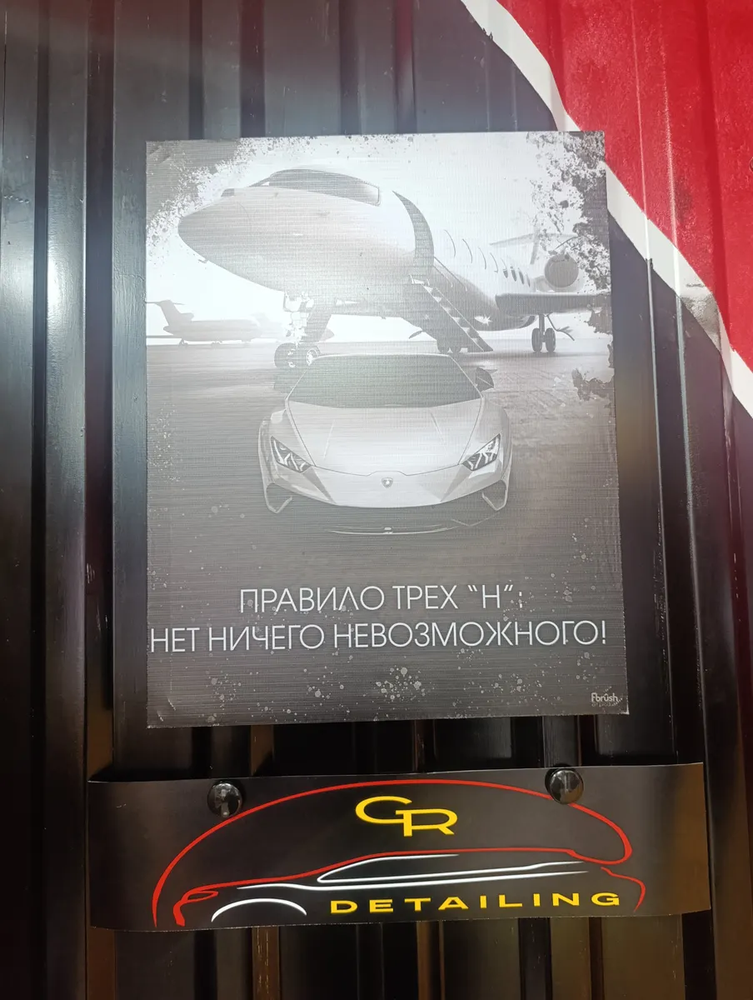
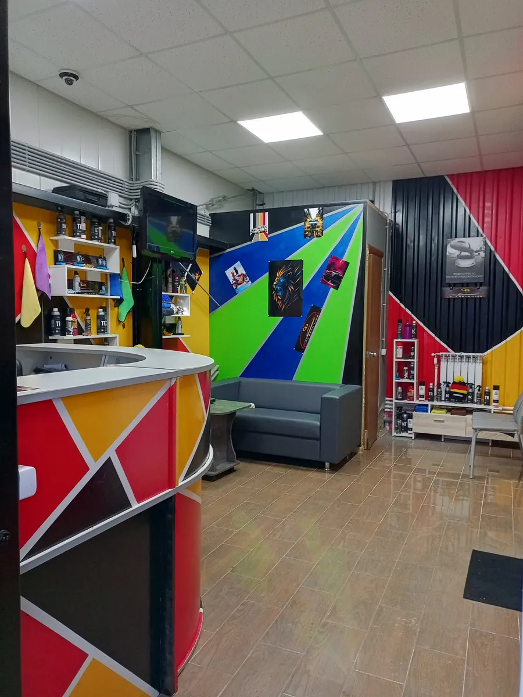

Детейлинг-мойка · Обнинск
Мойка в Обнинске, куда возвращаются раз в две недели
4,9 на Яндекс.Картах — и все 19 отзывов по пять звёзд. Двух-, трёх- и четырёхфазная мойка, запись на конкретное время, тёплая светлая студия и уютная зона ожидания.
- 4,9 на Яндекс.Картах · 19 отзывов — все 5★
- Циолковского, 6 · ежедневно 10:00–18:00
- Запись на конкретное время

Как устроен визит
Входит
- Выбрали услугу и записались на конкретное время
- Приняли машину и назвали цену
- Моем в несколько этапов — не быстро, но тщательно
- Выдаём авто с эффектом «даже новой не была»
- Угощаем кофе, пока ждёте в зоне отдыха
Отдельно, если нужно
- Светлая, чистая, тёплая студия
- Уютная зона ожидания
- Автохимия в ассортименте — посоветуем, что работает
- Мойка кузова, химчистка, полировка, тонировка
Цены — без сюрпризов
Прайс в карточке пустой, поэтому честно: стоимость называем до начала работ — и она не меняется.
Услуги студии
- Двухфазная мойкауточнить
- Трёхфазная мойка«машина блестела даже после 700 км в пути»уточнить
- Четырёхфазная мойкаудаление битума и колодочной пылиуточнить
- Химчистка салонауточнить
- Полировка кузова и фаруточнить
- Кварц / керамикауточнить
Клиенты о ценах: «приятные», «не завышены», «оправданы качеством». Точную стоимость назовём до начала работ.
Четыре шага — и авто сияет
- 01
Записались на время
На сайте за минуту — без ожидания в очереди.
- 02
Приехали и передали ключи
Оценим задачу и назовём цену до начала работ.
- 03
Мастера работают
Многоэтапная мойка: от мягких фаз до удаления битума.
- 04
Забираете блеск
Клиенты пишут: «в таком состоянии она даже новой не была».



Что обещаем каждому клиенту
Запись на конкретное время
Приезжаете — сразу в работу. Никаких очередей.
Цена до начала работ
Называем стоимость сразу — потом она не меняется.
Тёплая студия и зона ожидания
Светлое помещение, уютная зона отдыха, кофе.
Честный совет
Посоветуем то, что нужно именно вашей машине, — «что действительно работает».
Отзывы с Яндекс.Карт
«Испытание педантом в отношении мойки автомобиля ребята прошли) Двух/трёх/четырехфазная мойка, какую хотите. Удалить битум и вкрапления колодочной пыли — легко! Есть запись на конкретное время. Одно из лучших мест для наведения марафета в машине.»
Сергей · 6 декабря 2025
«Отличная мойка, есть запись на определённое время. Светлая, чистая, тёплая. Машину отмыли отлично — после охоты была очень грязная! Буду привозить все свои машины, рекомендовать друзьям.»
V S · 7 декабря 2025
«Отличная студия, с возможностью записи на определенное время. Машину отмыли так, что в таком состоянии она даже новой не была:) спасибо большое, теперь только к вам!»
Николай И. · 28 апреля
Отзывы с карточки на Яндекс.Картах, без правок.
Частые вопросы
Сколько стоит мойка?
Зависит от фазы (две, три или четыре) и размера авто. Запишитесь на время — назовём точную цену до начала работ: +7 (930) 751-12-34.
Нужно ли ждать очередь?
Нет — у нас запись на конкретное время. Выберите удобный слот на сайте или в WhatsApp.
Когда вы работаете?
Ежедневно, 10:00–18:00.
Чем отличается четырёхфазная мойка?
Дополнительные фазы: удаление битума, вкраплений колодочной пыли и сложных загрязнений. Подберём фазу под состояние вашей машины.
Где находитесь?
Обнинск, ул. Циолковского, 6 — светлая тёплая студия с зоной ожидания.
Запишитесь на время — без очередей
- Адрес
- Обнинск, ул. Циолковского, 6, Обнинске
- Часы
- Ежедневно 10:00–18:00
- Телефон
- +7 (930) 751-12-34